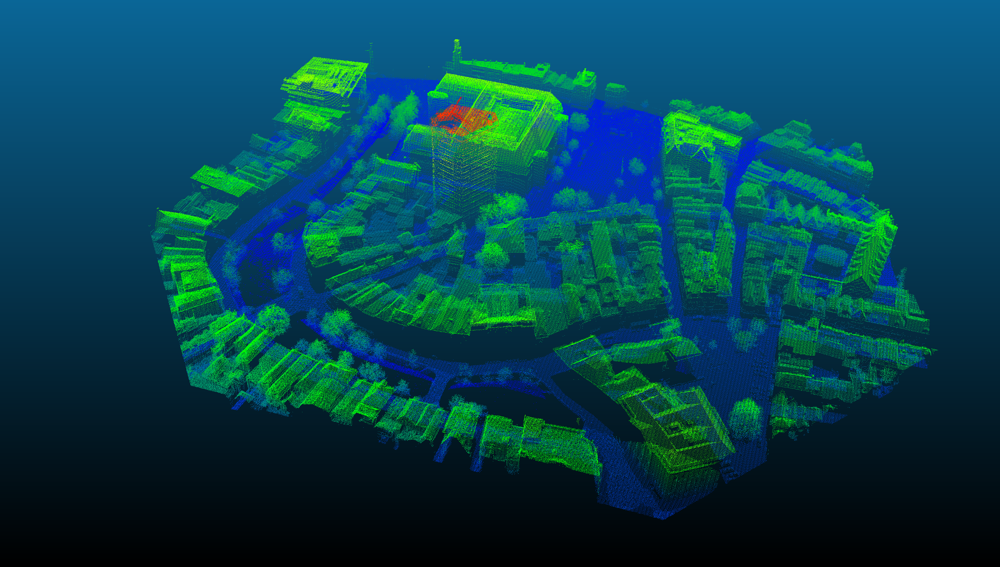
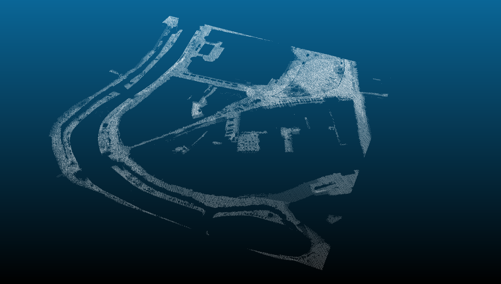

Updated: 23-04-2020
Updated: 23-04-2020
This R package automatically extracts elevation points or areas of the Netherlands from the Actueel Hoogtebestand Nederland (AHN). Individual elevations, raster areas or point clouds areas can be extracted from the AHN1, AHN2 or AHN3 using all the geo services that are made available by PDOK
| Type | AHN 3 | AHN2 | AHN1 |
|---|---|---|---|
| Resolutions | 0.5, 5m | 0.5m, 5m | 5m, 100m |
| DEM | DSM, DTM | DSM, DTM | DTM |
| point clouds | YES | YES | YES |
For the AHN2 DTM, there are 2 versions available: interpolated or non interpolated version.
For the AHN1 and AHN2 filterd (‘gefilterd’) and not filterd (‘uitgefilterd’) versions of the point clouds datasets are made available.
Installation
# install.packages('devtools') devtools::install_github('Jellest/rAHNextract') library(rAHNextract)
WCS vs. Sheets method
Retrieving individual AHN points or raster areas can be done through two methods: WCS method or sheets method. The WCS method is the fastest method and makes use of the OGC WCS protocol. The output is a 32float GeoTIFF file. This method is only efficient if a few AHN elevations or areas need to be retrieved.
With the sheets method, the data is retrieved from the 1km x 6.25 km raster sheets (kaartbladen) made made available by PDOK. This method is slower as it needs to download all the sheets required to retrieve the AHN (200-500 mb per sheet). This method is recommended to be used if many (point) elevations need to be retrieved from a certain small area. Other reason may be if it produces a more desired output format (regular GeoTIFF raster).
For both the points and raster areas, the WCS method is set to default. The sheets method can used by setting sheets.method=TRUE.
Examples
The examples below show the possibilities of this package by combining the different parameters. The different examples show how different geometries (circles, bboxes, or custom shapes) can be retrieved with the raster areas or point clouds. Please use the complete documentation of the functions in R to see all the available parameters.
If desired, points or areas using the WGS coordinate system can be used as input by setting LONLAT=TRUE. For efficiency and accuracy purposes, returned raster areas are always done using the RD New coordinate system (the source).
For ahn_point() and ahn_area() the default output is a temporary file. Set location of directory if you want to keep the raster output (point) using the output.dir parameter. The default output location for ahn_pc() is always the ‘/AHN_output’ directory in your working directory. Working with temporary files for point clouds is strongly discouraged due to the size of processed files.
Individual AHN elevations points
The ahn_point() function returns the AHN elevation at the provided point.
WCS method
This examples gets the elevation from the AHN3 (default) using the DSM (default) as the DEM.
ahn_point(name = "Utrecht point", X = 136550, Y = 456060) #> [1] "Download raster image succeeded." #> [1] "Intersecting raster. Getting elevation..." #> [1] "Elevation of Utrecht point: 7.38 m." #> [1] 7.38
sheets method
The sheets method can used by setting sheets.method=TRUE.
This examples gets the elevation from the AHN3 DTM at the exact same point.
ahn_point(name = "Utrecht point", X = 136550, Y = 456060, AHN = "AHN2", dem = "DTM", sheets.method = TRUE) #> [1] "The AHN sheets are loaded from or downloaded in: C:/Users/jelle/Documents/R/rAHNextract/AHN_sheets/AHN2/DTM" #> [1] "Found 1 sheet(s) with name(s):" #> [1] "31hz2" #> [1] "Downloading DTM sheets..." #> [1] "Cropping DTM sheet to (part of) the area." #> [1] "Download and crop of DTM rasters complete." #> [1] "Intersecting raster. Getting elevation..." #> [1] "Elevation of Utrecht point: 4.56 m." #> [1] 4.56
AHN elevation areas
The ahn_area()returns the AHN elevation raster of the provided area.
WCS method
circle
This example gets a circular area from the AHN3 DSM, and saving its output raster in a custom output directory.
Utrecht_circleWCS <- ahn_area(name = "Utrecht circle", X = 136550, Y = 456060, resolution = 0.5, radius = 100, output.dir = "C:/myProject") #> [1] "Creating circle from radius input." #> [1] "Destination directory of output AHN area: C:/myProject" #> [1] "Download raster image succeeded." #> [1] "C:/myProject/Utrechtcircle_100m_rAHN3_05m_DSM.tif" plot(Utrecht_circleWCS, xlab = "RD X", ylab = "RD Y", main = "AHN Elevation (m)")

BBOX
BBOX using a radius from a certain point
This example gets a BBOX using a point and radius) from the AHN3 DSM.
Utrecht_WCSsBBOX <- ahn_area(name = "Utrecht sBBOX", X = 136550, Y = 456060, radius = 100, bbox = TRUE, resolution = 0.5) #> [1] "Creating bbox from point and radius input." #> [1] "Download raster image succeeded." plot(Utrecht_WCSsBBOX, xlab = "RD X", ylab = "RD Y", main = "AHN Elevation (m)")

BBOX using BBOX coordinates
This example makes a bbox using BBOX coordinates from the AHN3 DTM (not interpolated version).
Utrecht_WCSBBOX <- ahn_area(name = "Utrecht BBOX", bbox = c(136450, 455960, 136650, 456160), dem = "DTM", resolution = 0.5, interpolate = FALSE) #> [1] "Creating BBOX from BBOX coordinates." #> [1] "Download raster image succeeded." plot(Utrecht_WCSBBOX, xlab = "RD X", ylab = "RD Y", main = "AHN Elevation (m)")

Using a custom geometry shape
This example retrieves the AHN area of a custom shape area from the 5m resolution DSM of the AHN3.
library(sf) Utrecht.shp <- sf::st_read("C:/myProject/Utrecht_oudegracht.shp") #> Reading layer `Utrecht_oudegracht' from data source `C:\myProject\Utrecht_oudegracht.shp' using driver `ESRI Shapefile' #> Simple feature collection with 1 feature and 1 field #> geometry type: POLYGON #> dimension: XY #> bbox: xmin: 136422 ymin: 455924.1 xmax: 136762 ymax: 456208.3 #> proj4string: +proj=sterea +lat_0=52.1561605555556 +lon_0=5.38763888888889 +k=0.9999079 +x_0=155000 +y_0=463000 +ellps=bessel +units=m +no_defs Utrecht_WCSpolygon <- ahn_area(name = "Utrecht polygon", polygon = Utrecht.shp, resolution = 5) #> [1] "Creating area from custom geometry." #> [1] "Download raster image succeeded." plot(Utrecht_WCSpolygon, xlab = "RD X", ylab = "RD Y", main = "AHN Elevation (m)")

Sheets method
The sheets method can used by setting sheets.method=TRUE.
This example gets a BBOX with a point and radius) from the AHN2 DSM (default). This particular and bigger BBOX intersects with 2 sheets and are both automatically downloaded and processed before it is merged into one raster output. The AHN sheets will be saved (or loaded) in the ‘AHN_sheets’ directory in a own set diretory.
Utrecht_sCircle <- ahn_area(name = "Utrecht scircle", X = 136550, Y = 456060, radius = 500, AHN = "AHN2", sheets.method = TRUE, sheets.location = "C:/myProject") #> [1] "Creating circle from radius input." #> [1] "Found 2 sheet(s) with name(s):" #> [1] "31hn2" #> [1] "31hz2" #> [1] "Downloading DSM sheets..." #> [1] "Cropping DSM sheet to (part of) the area." #> [1] "Downloading DSM sheets..." #> [1] "Cropping DSM sheet to (part of) the area." #> [1] "Merging all DSM rasters..." #> [1] "Download merge and crop of DSM rasters complete." plot(Utrecht_sCircle, xlab = "RD X", ylab = "RD Y", main = "AHN Elevation (m)")

Point clouds areas
The ahn_pc() function extracts the point clouds from a provided area. The output is LAS data compressed in a .laz file of the area.
AHN3 only has one point clouds dataset available. The AHN1 and AHN2 both have 2 versions: filtered (‘gefilterd’) and not filtered (‘uitgefilterd’). Default is gefilterd=TRUE.
For all point clouds downloads you can extract the exact same geometry shapes as used for raster areas using the same parameters described above. (X, Y, radius, bbox, shape).
Extracting point clouds will always be done using point clouds sheets provided by the PDOK. These are often large files and will by default be downloaded and kept on your machine in your working directory under ‘/AHN_sheets’ or a new ‘/AHN_sheets’ directory in your sheet download folder through the sheets.location parameter. Set sheets.keep=FALSE if you want to delete the downloaded point clouds sheets after the function has finished running. Warning: Extracting point clouds area require a lot of memory and time to be processed.
AHN3
This example retrieves the AHN point clouds of a custom shape area from the AHN3.
The output .laz data was imported in the program CloudCompare to generate the images of the .laz data.
### AHN3 library(sf) Utrecht.shp <- sf::st_read("C:/myProject/Utrecht_oudegracht.shp") #> Reading layer `Utrecht_oudegracht' from data source `C:\myProject\Utrecht_oudegracht.shp' using driver `ESRI Shapefile' #> Simple feature collection with 1 feature and 1 field #> geometry type: POLYGON #> dimension: XY #> bbox: xmin: 136422 ymin: 455924.1 xmax: 136762 ymax: 456208.3 #> proj4string: +proj=sterea +lat_0=52.1561605555556 +lon_0=5.38763888888889 +k=0.9999079 +x_0=155000 +y_0=463000 +ellps=bessel +units=m +no_defs Utrecht_shape_pc <- ahn_pc(name = "Utrecht polygon pc", polygon = Utrecht.shp) #> [1] "The AHN sheets are loaded from or downloaded in: C:/Users/jelle/Documents/R/rAHNextract/AHN_sheets/AHN3/PC" #> [1] "Creating area from custom geometry." #> [1] "Destination directory of output point clouds area: AHN_output" #> [1] "Found 1 sheet(s) with name(s):" #> [1] "31hz2" #> [1] "Downloading point cloud sheets..." #> [1] "https://download.pdok.nl/rws/ahn3/v1_0/laz/C_31HZ2.LAZ" #> [1] "Filter string: -keep_xy 136421 455924 136762 456209" #> [1] "writing .laz" #> [1] "C:/Users/jelle/Documents/R/rAHNextract/AHN_sheets/AHN3/PC/C_31HZ2.LAZ"

AHN2 and AHN1
This example retrieves the AHN point clouds of a BBOX area from the not filtered AHN2 (uitgefilterd). No custom output directory has been set, and therefore the working directory wil be used for the output .laz file. The point clouds sheets parameter is also not set, and therfore is/are loaded in the default ‘AHN_sheets’ directory.
Utrecht_BBOX_pc <- ahn_pc(name = "Utrecht BBOX pc", bbox = c(136450, 455960, 136650, 456160), AHN = "AHN2", gefilterd = TRUE) #> [1] "The AHN sheets are loaded from or downloaded in: C:/Users/jelle/Documents/R/rAHNextract/AHN_sheets/AHN2/PC" #> [1] "Creating BBOX from BBOX coordinates." #> [1] "Destination directory of output point clouds area: AHN_output" #> [1] "Found 1 sheet(s) with name(s):" #> [1] "31hz2" #> [1] "Downloading point cloud sheets..." #> [1] "https://geodata.nationaalgeoregister.nl/ahn2/extract/ahn2_gefilterd/g31hz2.laz.zip" #> [1] "Filter string: -keep_xy 136450 455960 136650 456160" #> [1] "writing .laz" #> [1] "C:/Users/jelle/Documents/R/rAHNextract/AHN_sheets/AHN2/PC/g31hz2.laz"
